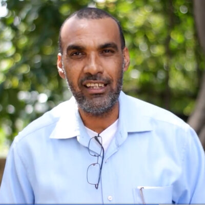
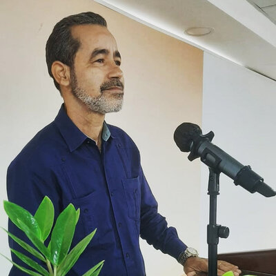

Daniel Nin Méndez
Predicador
Pastoreo, predicación y discipulado
Equipo
Evangelistas y diáconos que sirven a la congregación bajo la dirección del Espíritu Santo.
Predicador
Pastoreo, predicación y discipulado
Evangelista
Líder del Ministerio Juvenil

Evangelista
Ministerio de Niños y Adolescentes

Evangelista
Pequeños grupos y visitas
Diácono
Mantenimiento del edificio
Diácono
Ministerio de Varones y predicación
Diácono
Alabanza, Familia y Diseño Gráfico
Diácono Ad Vitam
Asesor · Retiros y actividades
Diácono Ad Vitam
Hospitalidad y orden congregacional
Historia
Iniciamos en 1983 con los hermanos Harold Paden, Alan McAfee y los esposos John y Dulce Cloward. El 20 de agosto de 1997 inauguramos nuestro edificio actual en la calle Caonabo #6 de Gazcue.